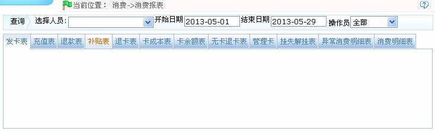
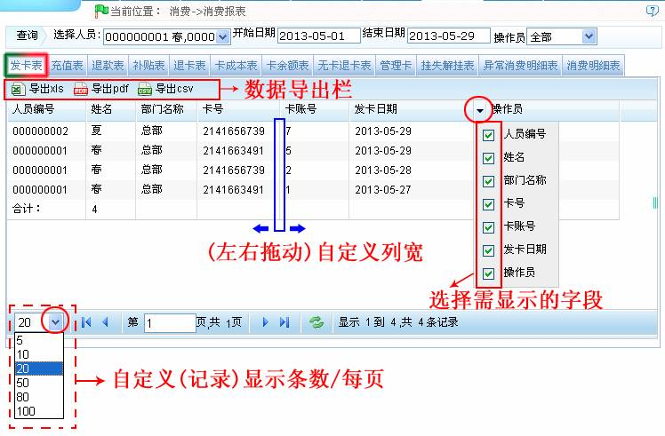

IC--8.7 消费报表
点击【消费】 【消费报表】，进入消费报表页面：
【消费报表】，进入消费报表页面：

Ⅰ、页面上方列表显示的查询栏，用户可根据需要选择人员，设置开始和结束日期，然后在页面下方列表中查看该人员对应的消费报表。
Ⅱ、页面下方列表显示了所有的消费报表信息，用户可单击每个选项卡名称查看该选项卡对应的报表信息。用户可查看的消费报表信息包括：发卡表、充值表、退款表、补贴表、退卡表、卡成本表、卡余额表、无卡退卡表、管理卡表、挂失/解挂表、异常消费明细表和消费明细表。
报表查看的具体方法如下（以查看“发卡表”为例）：
1、单击选择人员后的 按钮，在弹出人员选择框中选择人员。人员的选择方法请参见附录1 常用操作中的1选择人员。
按钮，在弹出人员选择框中选择人员。人员的选择方法请参见附录1 常用操作中的1选择人员。

2、设置开始日期和结束日期，日期的设置方法，请参见附录1 常用操作中的2. 选择日期。
3、单击操作员后的 按钮，在弹出的操作员下拉框中选择操作员。
按钮，在弹出的操作员下拉框中选择操作员。
4、单击“发卡表”（文字），查看发卡表，如下图所示：

（1）、用户可根据需要导出消费报表，可导出为“xls”、“pdf”或“csv”格式的文件。导出报表的具体方法，请参见附录1 常用操作中的5. 导出。
（2）、用户根据需要选择消费报表需显示的字段（打勾选中后，即显示）。
（3）、用户可根据需要（左右拖动）自定义列宽。
（4）、用户可根据需要自定义消费报表每页的记录显示条数。
 备注：单击每个选项卡名称（消费报表名称），将自动更新每个报表信息，并按设置的查询条件显示被选中人员的对应消费报表信息。
备注：单击每个选项卡名称（消费报表名称），将自动更新每个报表信息，并按设置的查询条件显示被选中人员的对应消费报表信息。